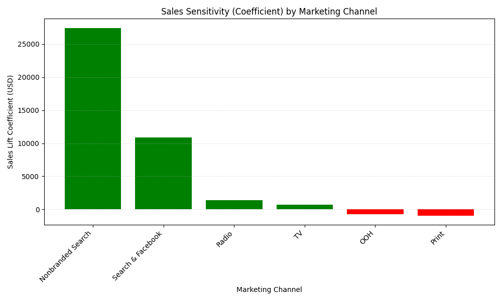

Grant Jape
Data scientist with 8+ years of experience. I build forecasting and predictive models, find out why business metrics move, and turn the answers into decisions.
What drives insurance cost? 1,338 policyholders
What I do
I use data to predict what will happen, explain why things changed, and help teams decide what to do next. My work sits where statistics meets business questions: forecasting, pricing, performance diagnostics and segmentation.
Forecast and predict
I build forecasting and predictive models that run in production, from seasonal time-series forecasts to simulations that give a range of likely outcomes instead of a single number. Every model is tested against a simple baseline, so it's clear how much it actually adds.
Diagnose what changed
When a key metric jumps or drops, I find out why. I test hypotheses against the data, rule out the obvious explanations, and break a change into volume, price and mix so it's clear which lever moved and what it cost.
Inform business decisions
I turn analysis into recommendations people can act on: pricing and budget calls, scenario planning, and segmentation that shows which customers are worth the most. Before anyone relies on a model, I validate it on data it has never seen.
Ship it so others can use it
Analysis only helps if people use it. I package models as self-serve tools and dashboards, automate recurring analyses, and write up results so non-technical teams can act on them without me in the room.
Projects
Personal projects, each with its code and data on GitHub.
Medical insurance cost prediction
What makes one policyholder cost four times more than another? I compared four models on 1,338 policies and tuned a gradient-boosted model that lands within about $2,000 of the real charge on average.

Marketing mix model for bike sales
Five years of weekly spend across six channels, modeled with adstock carryover and diminishing returns. The result: put budget into search first, and audit print and outdoor, which showed negative lift.

Revenue and customer integrity audit
Seven messy tables in PostgreSQL, rebuilt into a clean analytics schema. The reconciliation audit found 244 products sold beyond their stock, and led to a two-tier fix for the inventory and engineering teams.
Superstore performance dashboard
An interactive Tableau dashboard of top KPIs and the link between sales and profitability, designed so an executive can find the answer without a walkthrough.

Tools
Python (pandas, NumPy, SciPy, scikit-learn, statsmodels, XGBoost), R
Time-series forecasting (ARIMA, SARIMA), regression and classification, gradient boosting, clustering, Monte Carlo simulation, empirical Bayes, A/B testing, backtesting
SQL (Snowflake, PostgreSQL), ETL pipelines, APIs, data-quality audits
Tableau, Power BI, Looker Studio, Plotly and Dash, Matplotlib, custom web dashboards
Git and GitHub Actions, Excel, Claude Code and LLM automation
Education
International Master in Data Science and Machine Learning
Rome Business School
Master in Statistics and Analytics
Azusa Pacific University · Summa Cum Laude · GPA 3.8+
Bachelor in Communication
Azusa Pacific University